import sys, pathlib
sys.path.insert(0, str(pathlib.Path("_includes").resolve()))
from setup import configure_warnings, ensure_matplotlib_initialized
ensure_matplotlib_initialized() # see the import-order note in _includes/setup.py
configure_warnings()
import numpy as np
import pandas as pd
import ggnomics as gg
import ggnomics.upset as upset
from plotnine import (
aes, geom_bar, geom_boxplot, geom_col, geom_point, geom_segment, ggplot,
labs, theme, theme_bw,
)
from plotnine.composition import plot_annotationNative UpSet plots
Composable set intersections for differential-expression results
ggnomics.upset is a native plotnine implementation of set-intersection (“UpSet”) plots, in the style of ComplexUpset. It has no runtime dependency on the Matplotlib-based upsetplot package — every plot it returns is an ordinary plotnine.composition.Compose object, buildable from panels you can inspect, theme, and recompose like any other plotnine figure.
1. Why use an UpSet plot?
A Venn diagram is unreadable past three or four sets: circle overlaps stop being legible, and areas cannot be made exactly proportional in general. UpSet plots trade the geometric layout for a matrix — one row per set, one column per intersection — annotated with bar charts of intersection size. This scales cleanly to many sets and makes exact set membership legible at a glance, at the cost of not being a familiar circle diagram.
Here, we compare which genes are called differentially expressed (DE) at each of the three E-MTAB-1625 salt-stress timepoints — a natural three-to-many-set overlap question that a Venn diagram handles poorly once more timepoints or contrasts are added.
2. Data source and selection rule
We reuse the three matched salt-vs-control PyDESeq2 fits already computed for Bulk RNA-seq and Specialized plots, from the same E-MTAB-1625 rice salt-stress experiment (see datasets.yml):
from data import run_deseq2_on_emtab1625
timepoints = ["1 hour", "5 hour", "24 hour"]
fits = {timepoint: run_deseq2_on_emtab1625(timepoint) for timepoint in timepoints}The package’s documented significance rule for mode="upset" (see Section 13) is padj < 0.05 and abs(log2FoldChange) >= 1. Applying it here, before assuming any overlap is interesting:
strict_sig = {}
for timepoint, fit in fits.items():
res = fit["results"].dropna(subset=["log2FoldChange", "padj"])
sig = res.loc[(res["padj"] < 0.05) & (res["log2FoldChange"].abs() >= 1)]
strict_sig[timepoint] = set(sig.index)
{timepoint: len(genes) for timepoint, genes in strict_sig.items()}{'1 hour': 10, '5 hour': 4, '24 hour': 487}print("1h & 24h:", len(strict_sig["1 hour"] & strict_sig["24 hour"]))
print("5h & 24h:", len(strict_sig["5 hour"] & strict_sig["24 hour"]))
print("1h & 5h:", len(strict_sig["1 hour"] & strict_sig["5 hour"]))
print("all three:", len(strict_sig["1 hour"] & strict_sig["5 hour"] & strict_sig["24 hour"]))1h & 24h: 2
5h & 24h: 1
1h & 5h: 0
all three: 0This is a real and biologically sensible result, not an artifact: the salt response strengthens substantially between 1 hour and 24 hours, so 1-hour (10 genes) and 5-hour (4 genes) contribute too few significant genes at this threshold to show an informative intersection structure — the overlaps above are 0-2 genes. Section 13 shows this exact, honest result via plot_pseudobulk_de.
To demonstrate the rest of the API’s features on a richer, still-real overlap, Sections 4-12 and 14 instead use a clearly labeled descriptive, top-ranked rule: the 300 genes with the largest abs(log2FoldChange) at each timepoint, regardless of padj. This is descriptive (a ranking), not a significance claim — it deliberately is not read as “these genes are DE”; see the callout in Section 15.
TOP_N = 300
top_ranked = {}
for timepoint, fit in fits.items():
res = fit["results"].dropna(subset=["log2FoldChange"])
ranked = res.reindex(res["log2FoldChange"].abs().sort_values(ascending=False).index)
top_ranked[timepoint] = set(ranked.head(TOP_N).index)
{timepoint: len(genes) for timepoint, genes in top_ranked.items()}{'1 hour': 300, '5 hour': 300, '24 hour': 300}print("1h & 24h:", len(top_ranked["1 hour"] & top_ranked["24 hour"]))
print("5h & 24h:", len(top_ranked["5 hour"] & top_ranked["24 hour"]))
print("1h & 5h:", len(top_ranked["1 hour"] & top_ranked["5 hour"]))
print("all three:", len(top_ranked["1 hour"] & top_ranked["5 hour"] & top_ranked["24 hour"]))1h & 24h: 14
5h & 24h: 34
1h & 5h: 24
all three: 23. Constructing the Boolean membership table
ggnomics.upset takes one row per element (here, gene) and one Boolean column per set (here, timepoint) — plus any extra columns you want available to custom annotations.
timepoint_columns = [tp.replace(" ", "_") for tp in timepoints]
all_genes = sorted(set.union(*top_ranked.values()))
membership = pd.DataFrame({"gene_id": all_genes})
for timepoint, column in zip(timepoints, timepoint_columns):
membership[column] = membership["gene_id"].isin(top_ranked[timepoint])
logfc_by_timepoint = pd.DataFrame(
{column: fits[tp]["results"]["log2FoldChange"] for tp, column in zip(timepoints, timepoint_columns)}
).reindex(all_genes)
# .to_numpy(): logfc_by_timepoint is indexed by gene ID (from reindex(all_genes)),
# while `membership` has a plain positional index built in the same gene order —
# a plain Series assignment here would align on (mismatched) index and produce NaN.
membership["max_abs_log2fc"] = logfc_by_timepoint.abs().max(axis=1).to_numpy()
membership["timepoint_of_max_effect"] = logfc_by_timepoint.abs().idxmax(axis=1).to_numpy()
membership.head()| gene_id | 1_hour | 5_hour | 24_hour | max_abs_log2fc | timepoint_of_max_effect | |
|---|---|---|---|---|---|---|
| 0 | ENSRNA049448855 | False | True | False | 3.434670 | 5_hour |
| 1 | ENSRNA049464535 | True | False | False | 2.470414 | 1_hour |
| 2 | ENSRNA049465125 | True | False | False | 2.522875 | 1_hour |
| 3 | ENSRNA049465332 | True | False | False | 3.079564 | 1_hour |
| 4 | ENSRNA049467117 | True | False | False | 2.490650 | 1_hour |
membership.shape(830, 6)4. Basic native UpSet plot
upset.upset(membership, timepoint_columns)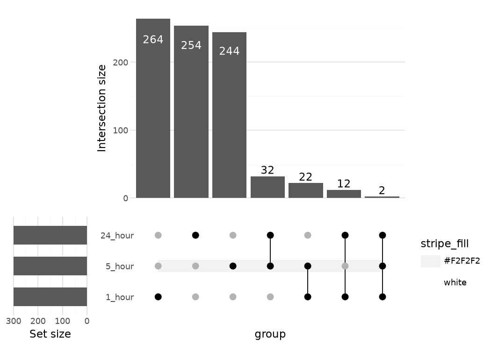
5. Inspecting the computation
upset() and upset_data() are convenience wrappers around three independently usable, independently testable steps: compute_intersections -> select_intersections -> apply_intersection_selection.
statistics = upset.compute_intersections(membership, intersect=timepoint_columns)
statistics.sizes| exclusive_intersection | inclusive_intersection | exclusive_union | inclusive_union | |
|---|---|---|---|---|
| intersection | ||||
| I0 | 244 | 300 | 244 | 300 |
| I1 | 264 | 300 | 264 | 300 |
| I2 | 254 | 300 | 254 | 300 |
| I3 | 2 | 2 | 830 | 830 |
| I4 | 32 | 34 | 530 | 566 |
| I5 | 22 | 24 | 530 | 576 |
| I6 | 12 | 14 | 530 | 586 |
selection = upset.select_intersections(statistics, min_size=5, sort_intersections="descending")
selection.intersections('I1', 'I2', 'I0', 'I4', 'I5', 'I6')prepared = upset.apply_intersection_selection(statistics, selection=selection)
upset.upset(prepared)
6. Four region-selection modes
ComplexUpset (and ggnomics.upset) define four ways to count how an element relates to a target combination of sets, controlled by mode=. The exact semantics are easiest to see on create_upset_abc_example(), a fixed 325-row example with three sets A/B/C and known counts:
abc_example = upset.create_upset_abc_example()
abc_statistics = upset.compute_intersections(abc_example, intersect=["A", "B", "C"], intersections="all")
target = next(
identifier for identifier, members in abc_statistics.intersection_members.items()
if members == ("A", "B")
)
abc_statistics.sizes.loc[[target]]| exclusive_intersection | inclusive_intersection | exclusive_union | inclusive_union | |
|---|---|---|---|---|
| intersection | ||||
| I4 | 10 | 11 | 110 | 123 |
For the target combination ("A", "B"):
| Mode | Meaning | Value |
|---|---|---|
exclusive_intersection (“distinct”) |
elements in A and B, and nothing else | 10 |
inclusive_intersection (“intersect”) |
elements in at least A and B (may also be in C) | 11 |
exclusive_union |
elements in at least one of A, B, and nothing outside {A, B} | 110 |
inclusive_union (“union”) |
elements in at least one of A or B | 123 |
exclusive_intersection (“distinct”) is what the intersection-size bars show by default — it is what a reader expects an UpSet bar to mean; the other three answer related but different questions and are mainly used by the ratio annotation and the statistical helpers.
7. Filtering and sorting intersections
upset.upset(
membership,
timepoint_columns,
min_size=10,
sort_intersections_by=["cardinality"],
sort_intersections="descending",
)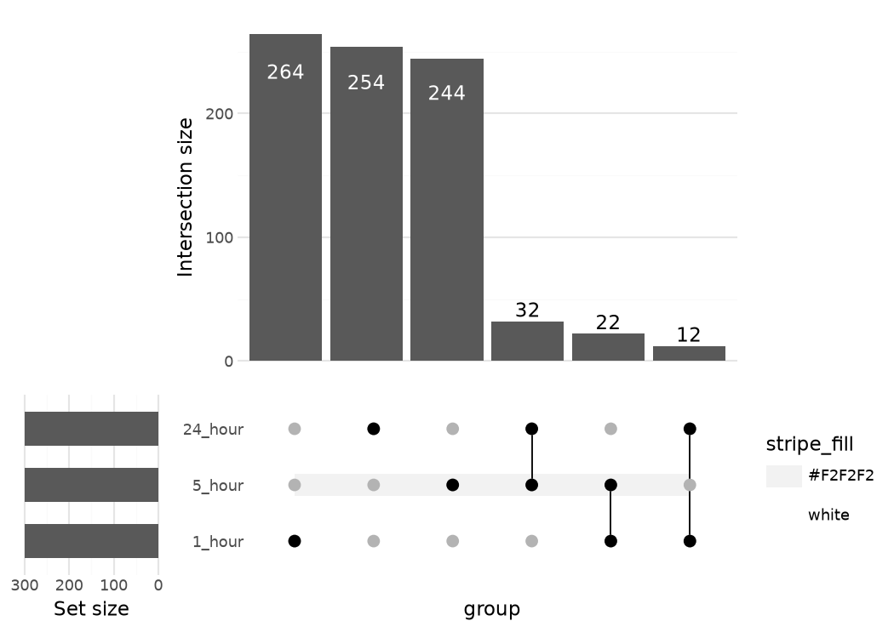
upset.upset(membership, timepoint_columns, n_intersections=5)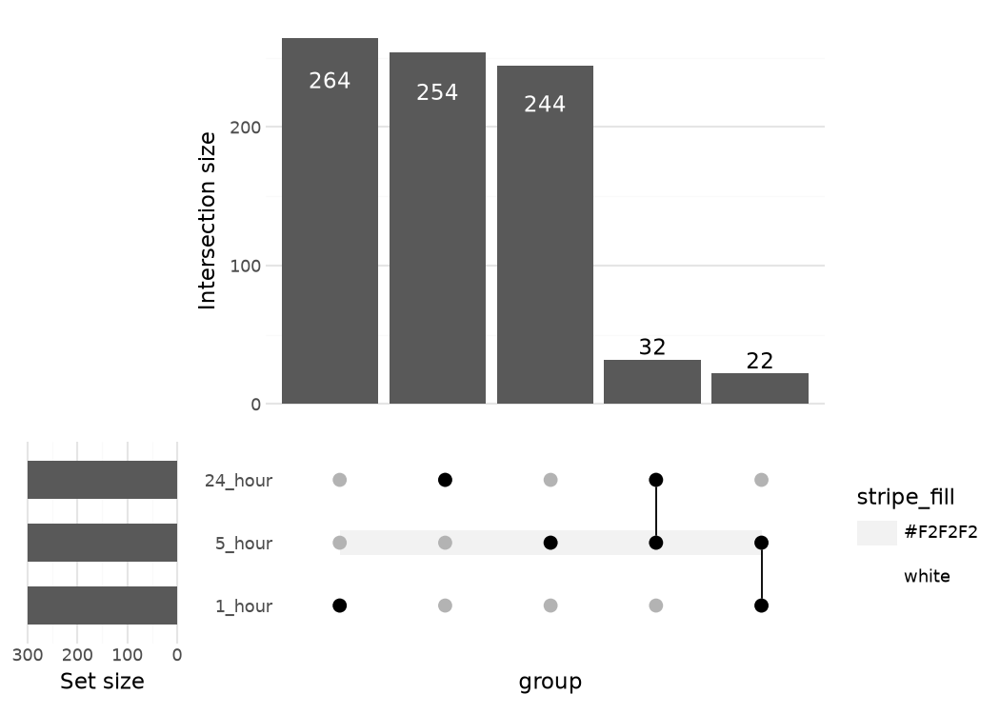
8. Set and intersection highlighting
upset_query() highlights a specific set (set=) or intersection (intersect=) with extra plotting aesthetics, applied everywhere it is relevant (or restricted with only_components=).
upset.upset(
membership,
timepoint_columns,
queries=[
upset.upset_query(intersect=["1_hour", "24_hour"], color="#D55E00"),
upset.upset_query(set="24_hour", color="#0072B2"),
],
)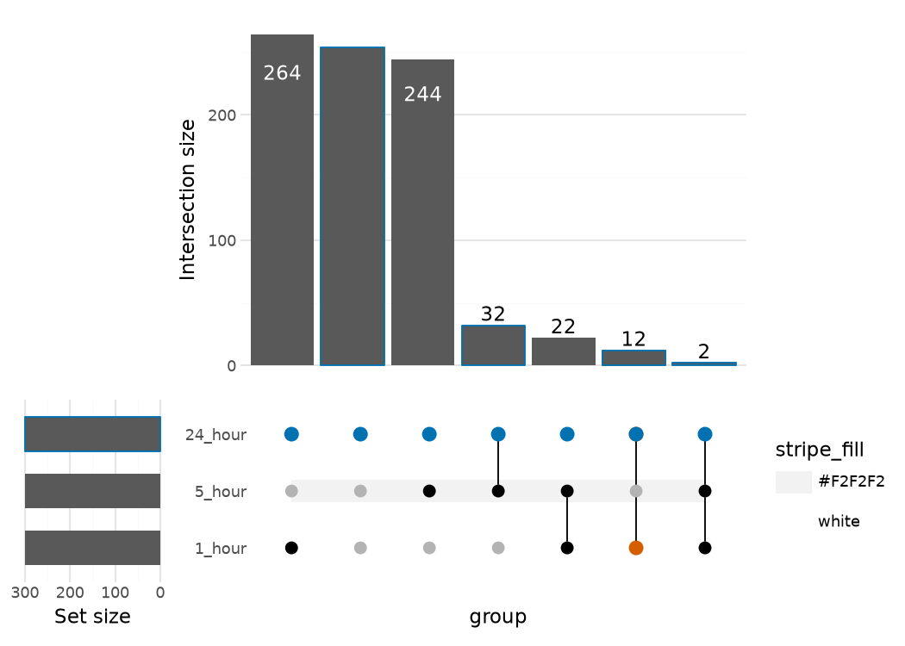
9. Intersection-size and ratio annotations
intersection_ratio() adds a second panel showing each intersection’s size relative to inclusive_union by default — how much of the total involved elements a given combination accounts for.
upset.upset(
membership,
timepoint_columns,
base_annotations={
"Intersection size": upset.intersection_size(),
# counts=False: the default "numerator/denominator" labels overlap on
# the narrow low-ratio bars here; the bar heights already show the
# ratio clearly at this width.
"Intersection ratio": upset.intersection_ratio(counts=False),
},
)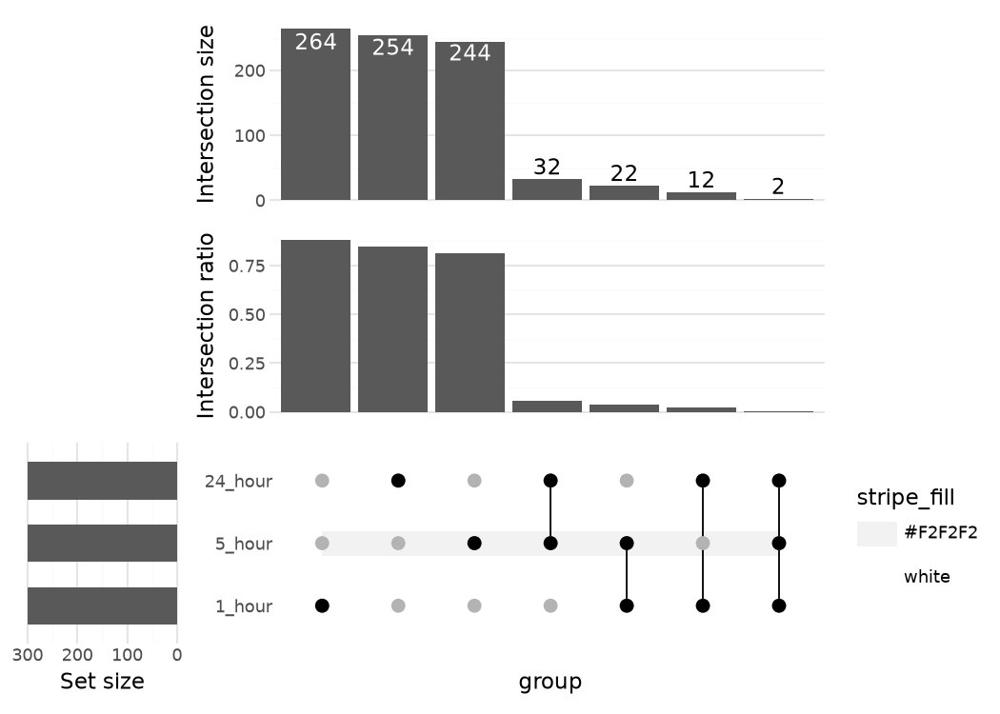
10. A custom annotation based on log2 fold change
upset_annotate() builds an annotation panel from any numeric column already present in the membership table plus any Plotnine geom(s) — here, a boxplot of max_abs_log2fc per intersection.
upset.upset(
membership,
timepoint_columns,
annotations={
"max |log2FC|": upset.upset_annotate("max_abs_log2fc", geom_boxplot()),
},
)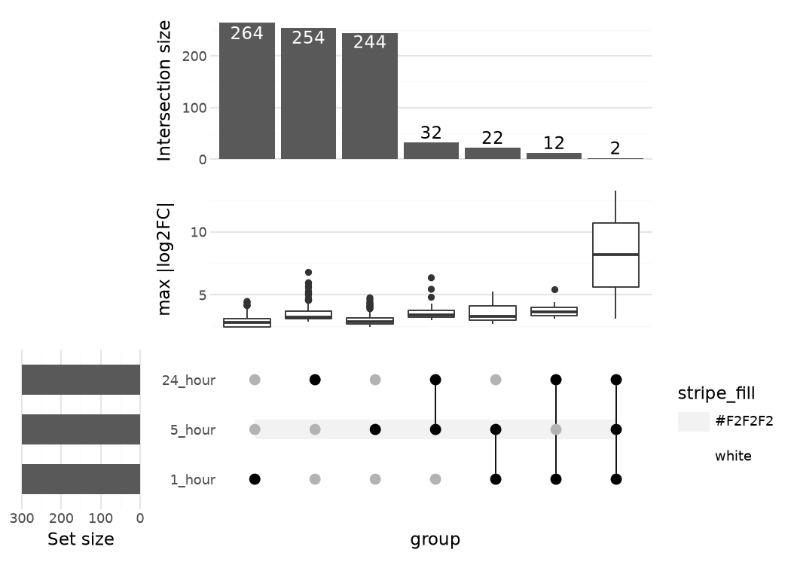
11. Matrix, stripes, and set-size customization
The membership matrix, its background stripes, and the marginal set-size panel are each independently swappable specifications.
stripe_metadata = pd.DataFrame({
"set": timepoint_columns,
"phase": ["early", "early", "late"],
})
upset.upset(
membership,
timepoint_columns,
matrix=upset.intersection_matrix(geom=geom_point(size=4)),
stripes=upset.upset_stripes(
mapping={"color": "phase"},
colors={"early": "#E8E8E8", "late": "#D8E8F8"},
data=stripe_metadata,
),
set_sizes=upset.upset_set_size(position="right", geom=geom_col(width=0.5, fill="#555555")),
)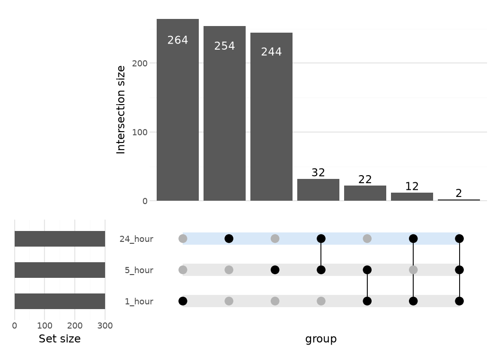
12. Composition with another Plotnine plot
Because upset() returns a plotnine.composition.Compose, it composes with ordinary plotnine plots using the same | and / operators as any other ggnomics composition:
overlap_summary = pd.DataFrame({
"timepoint": timepoint_columns,
"n_top_ranked": [len(top_ranked[tp]) for tp in timepoints],
})
bar = (
ggplot(overlap_summary, aes(x="timepoint", y="n_top_ranked"))
+ geom_bar(stat="identity", fill="#4477AA")
+ theme_bw()
+ labs(title="Top-ranked genes per timepoint", y="n genes")
)
combined = (upset.upset(membership, timepoint_columns) | bar) + plot_annotation(
theme=theme(figure_size=(13, 6))
)
combined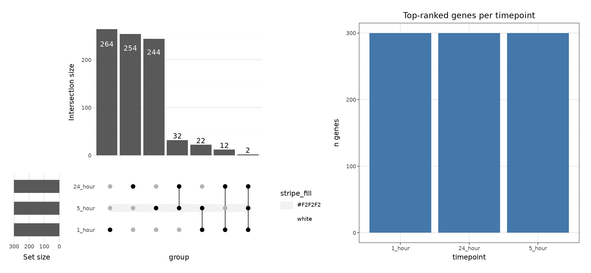
13. Native plot_pseudobulk_de(mode="upset")
plot_pseudobulk_de accepts a dict[str, DataFrame] of DE result tables directly (no pre-built membership table needed) and returns a native Compose object — the same underlying ggnomics.upset.upset() backend used throughout this vignette, with the default padj < 0.05 / abs(log2FoldChange) >= 1 significance rule from Section 2:
per_timepoint_results = {
tp.replace(" ", "_"): fit["results"] for tp, fit in fits.items()
}
gg.plot_pseudobulk_de(
per_timepoint_results, mode="upset", title="Significant DE genes by timepoint (strict threshold)"
)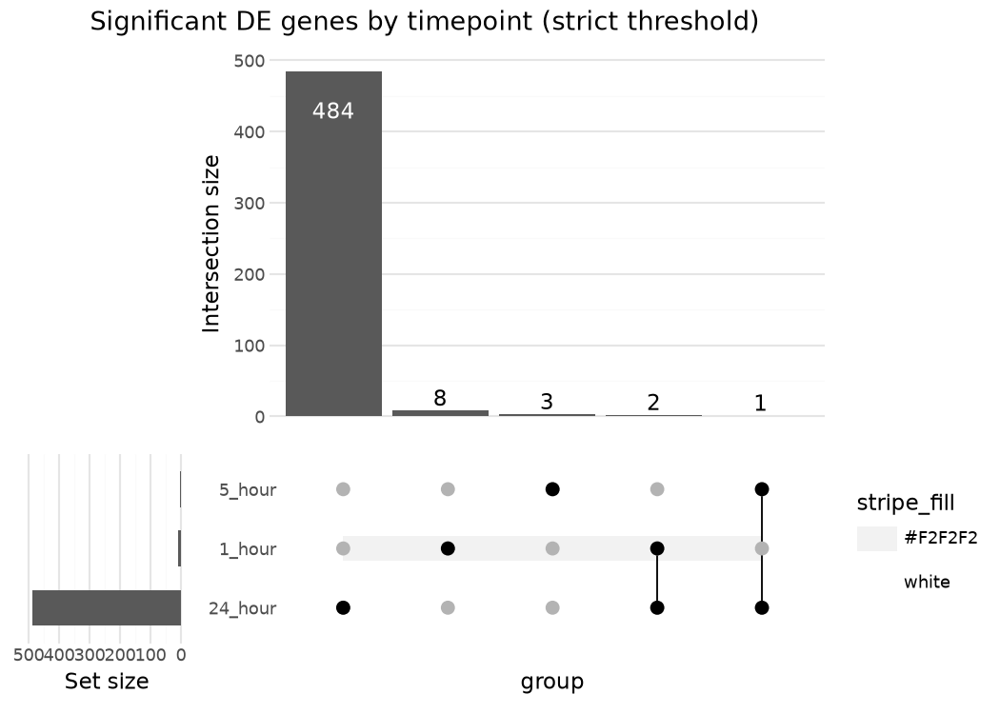
This is the honest result at the package’s default significance threshold: almost no genes are called significant at 1 or 5 hours, so almost no cross-timepoint bars appear — a real finding about this dataset (the salt response has barely started at 1-5 hours), not a plotting limitation.
14. Venn representation for a small two-/three-set comparison
For two or three sets, ggnomics.upset also provides an approximate geometric/raster Venn representation — useful as a familiar shape for small comparisons; region areas are visually indicative, not exactly proportional.
venn_membership = membership[["5_hour", "24_hour"]].copy()
venn_layout = upset.arrange_venn(venn_membership, sets=["5_hour", "24_hour"])
(
ggplot()
+ upset.geom_venn_region(venn_layout)
+ upset.geom_venn_circle(venn_layout)
+ upset.geom_venn_label_region(venn_layout)
+ upset.geom_venn_label_set(venn_layout)
+ upset.scale_fill_venn_mix(venn_layout, colors=["#4477AA", "#CC6677"])
)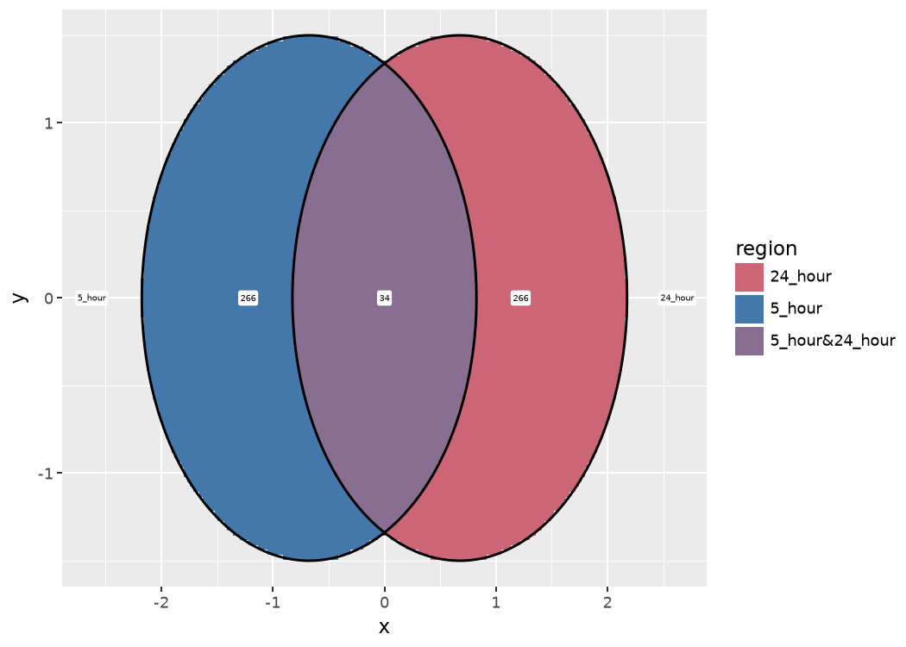
venn_layout_3 = upset.arrange_venn(membership, sets=timepoint_columns)
(
ggplot()
+ upset.geom_venn_region(venn_layout_3)
+ upset.geom_venn_circle(venn_layout_3)
+ upset.geom_venn_label_region(venn_layout_3)
+ upset.geom_venn_label_set(venn_layout_3)
+ upset.scale_fill_venn_mix(venn_layout_3, colors=["#4477AA", "#CC6677", "#228833"])
)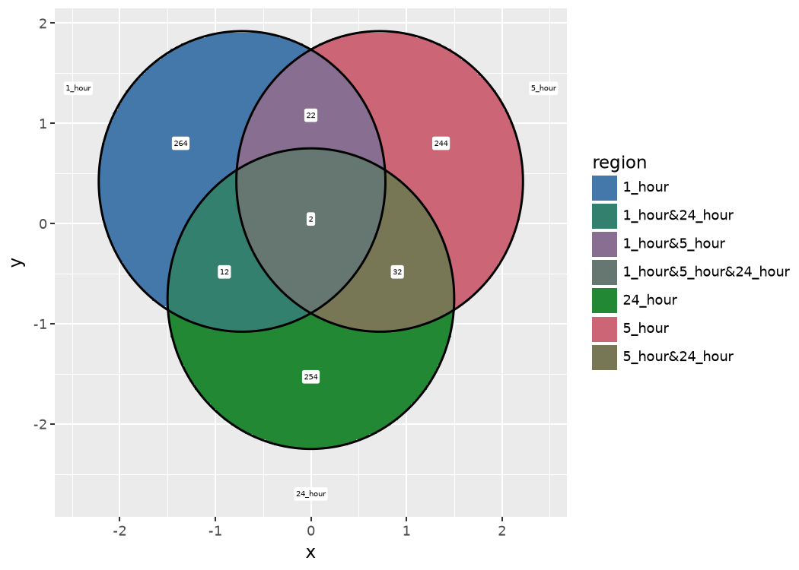
15. Statistical-helper caution
compare_between_intersections() / upset_test() compare a covariate across intersections (Kruskal-Wallis for numeric, chi-square for categorical, by default). They are only inferentially valid when the rows supplied represent appropriate independent statistical units. Here, the rows are genes: this comparison is descriptive of the top-ranked gene table constructed above, not an inference about biological replicates — a per-gene p-value from this table must not be read as “timepoints differ” in the way a per-sample/per-patient p-value would be.
upset.upset_test(membership, timepoint_columns, ignore_mode_columns=True, ignore=["gene_id"])| variable | p_value | statistic | test | fdr | |
|---|---|---|---|---|---|
| 0 | timepoint_of_max_effect | 0.000000e+00 | 1504.116290 | Pearson chi-square | 0.000000e+00 |
| 1 | max_abs_log2fc | 1.156895e-57 | 280.620864 | Kruskal-Wallis | 1.156895e-57 |
16. Performance and combinatorial growth
intersections="all" materializes every one of the 2^n possible combinations of n sets — fine for the 8 combinations of 3 sets used here, but it grows explosively (2^10 = 1024, 2^20 > 10^6, …). For more than a handful of sets, prefer the default intersections="observed" (only combinations that actually occur) or an explicit list of the combinations you care about; upset_data() also raises before materializing an intersections="all" result that would exceed max_combinations_datapoints_n.
17. See also
- API reference — full signatures for every function used above.
- Bulk RNA-seq — the PyDESeq2 fits reused here.
- Plot gallery — a compact function table for
ggnomics.upset.